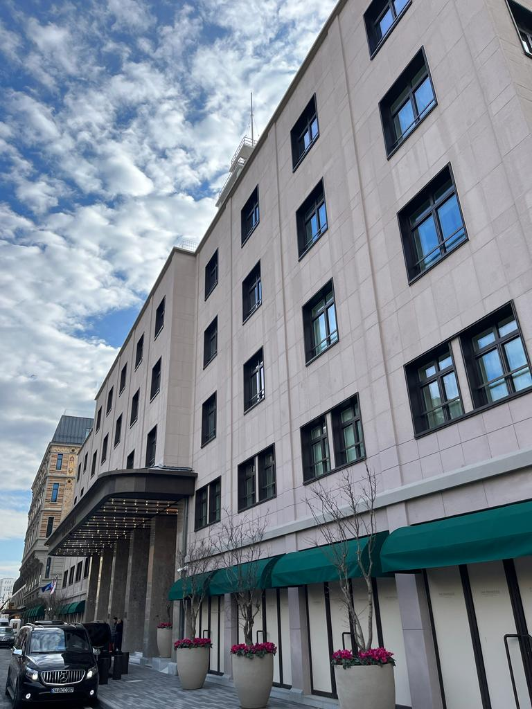
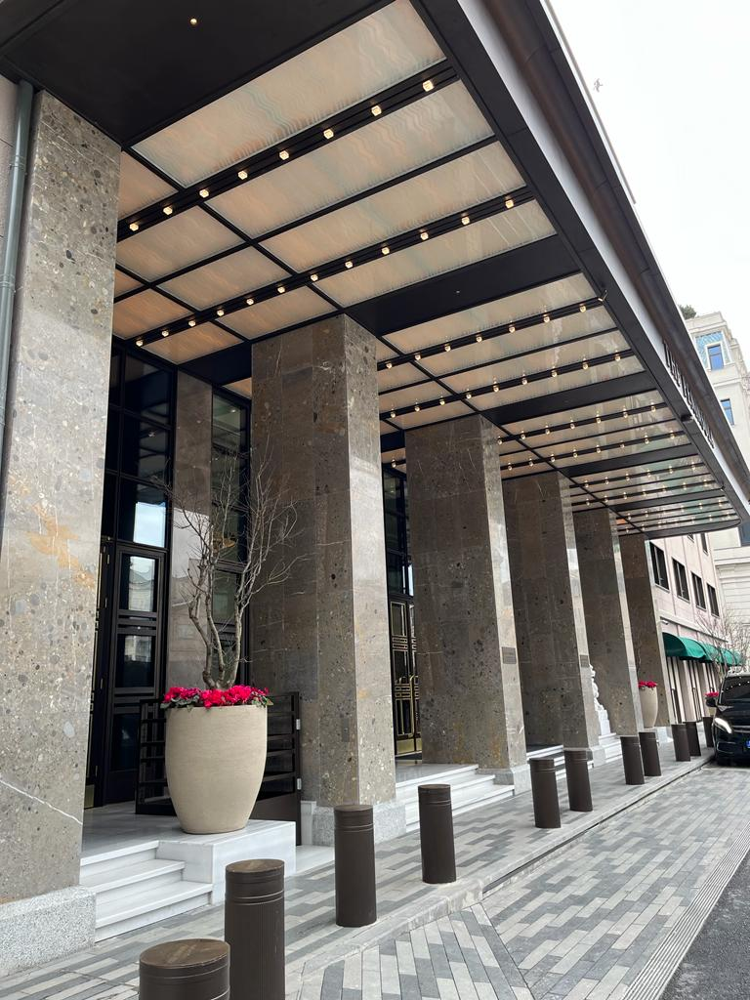
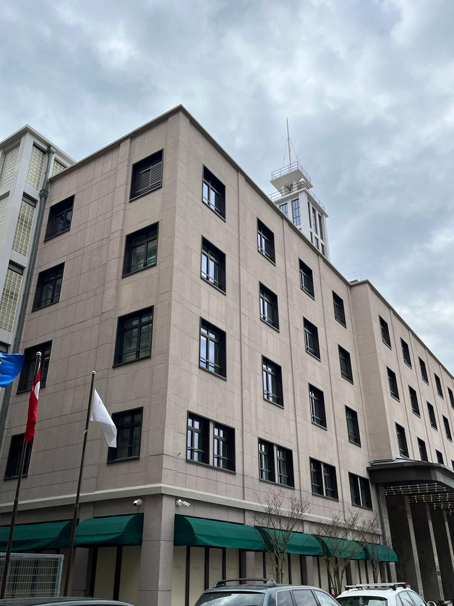
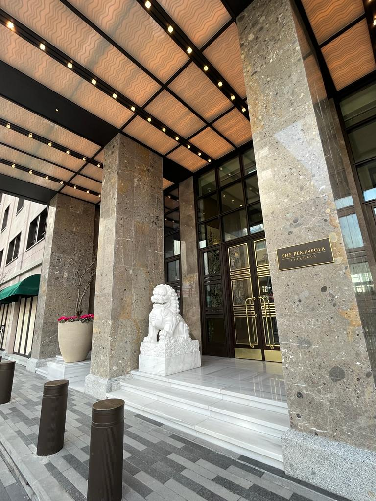
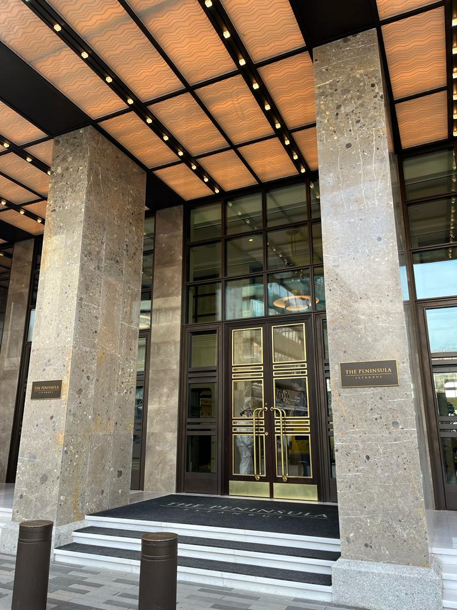
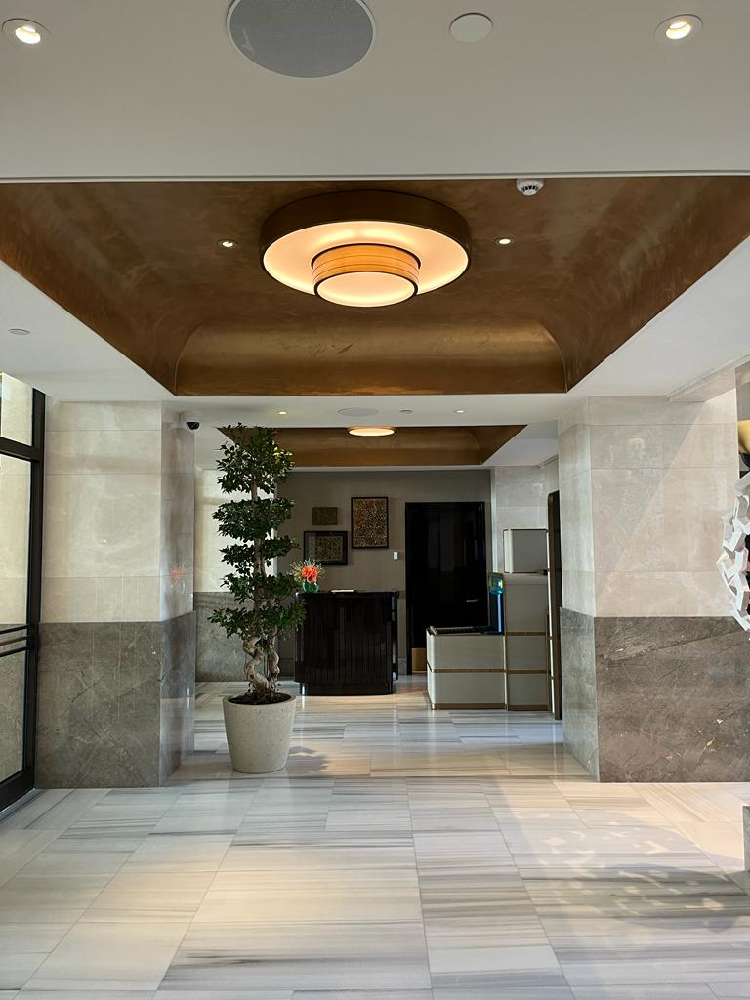
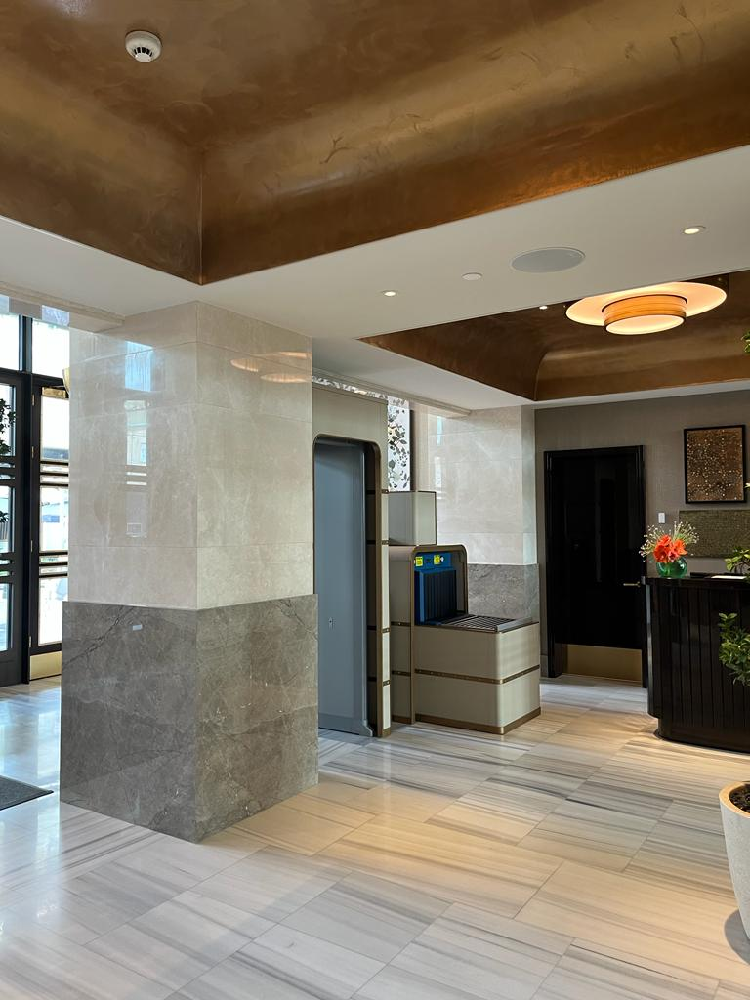
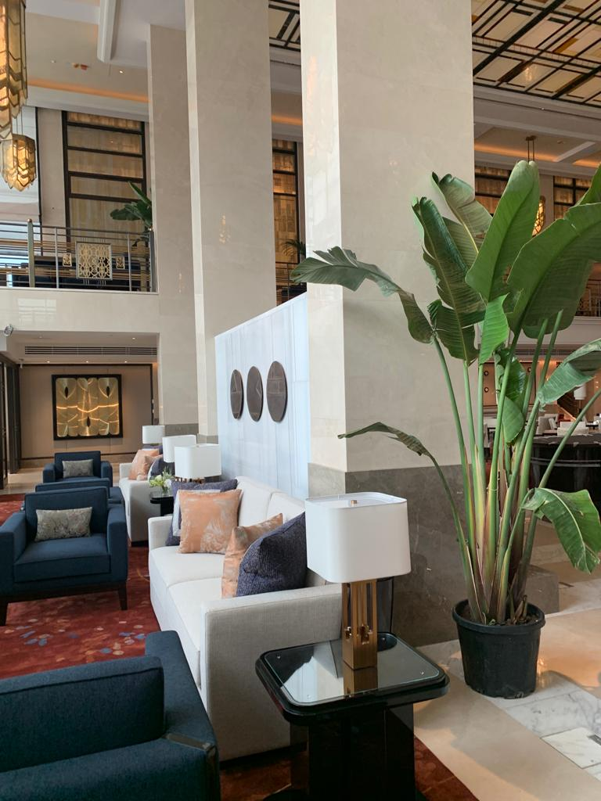
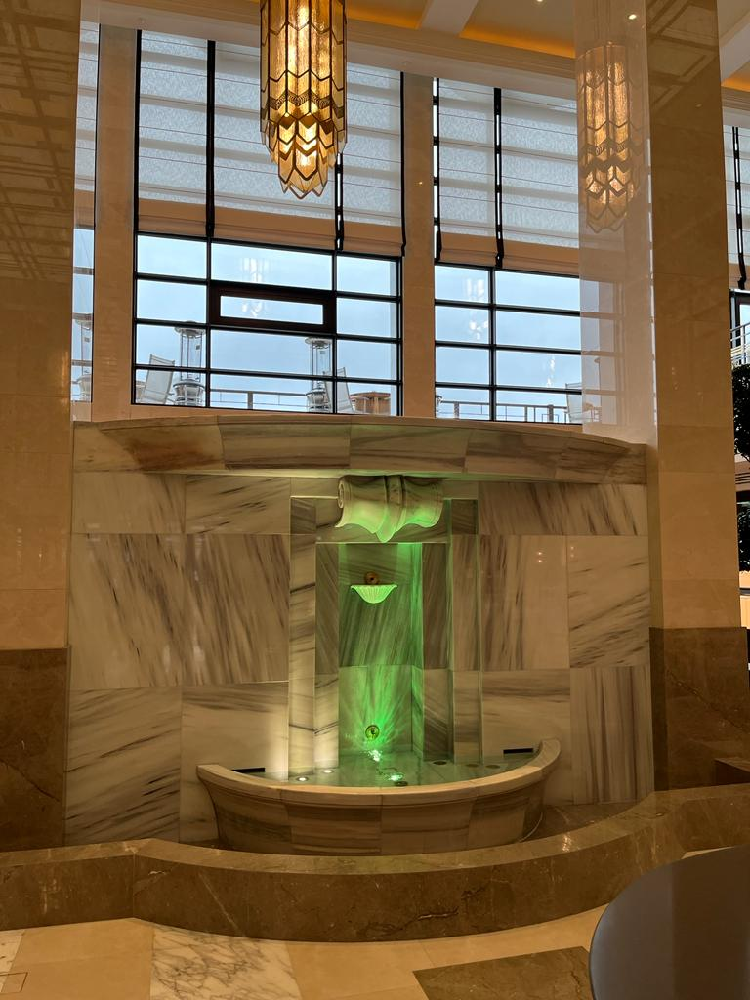

Yolcu Salonu









×

1930’lu yılların başlarında limanda gemi yolcularının karşılanmasına yönelik ihtiyaç gelen gemi sayısının çoğalmasıyla artmıştır. Bu ihtiyacın giderilmesi için İstanbul Liman işletme İdaresi’nin 1936 yılında açtığı yarışma sonucunda Rebii Gorbon’un projesi birinci seçilmiştir. Bu proje iki buçuk yıl içerisinde inşa edilmiş ve 1940 yılında kullanıma açılmıştır. Yolcu Salonu’nun kulesinde bulunan saat, II. Abdülhamid’in saatçisi olan Mustafa Şem’i tarafından yapılmıştır. Günümüze kadar, Kılavuzluk Servisi’ne, Denizyolları İşletmesinin Muhasebe Servisi’ne ve Liman Lokantası’na ev sahipliği yapmış olan Yolcu Salonu Peninsula Hotel projesi ile otele dahil edilmiştir.
Merkez Han Restorasyon Öncesi ve Restorasyon Sonrası